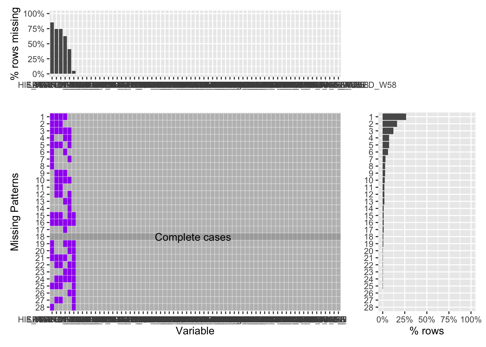
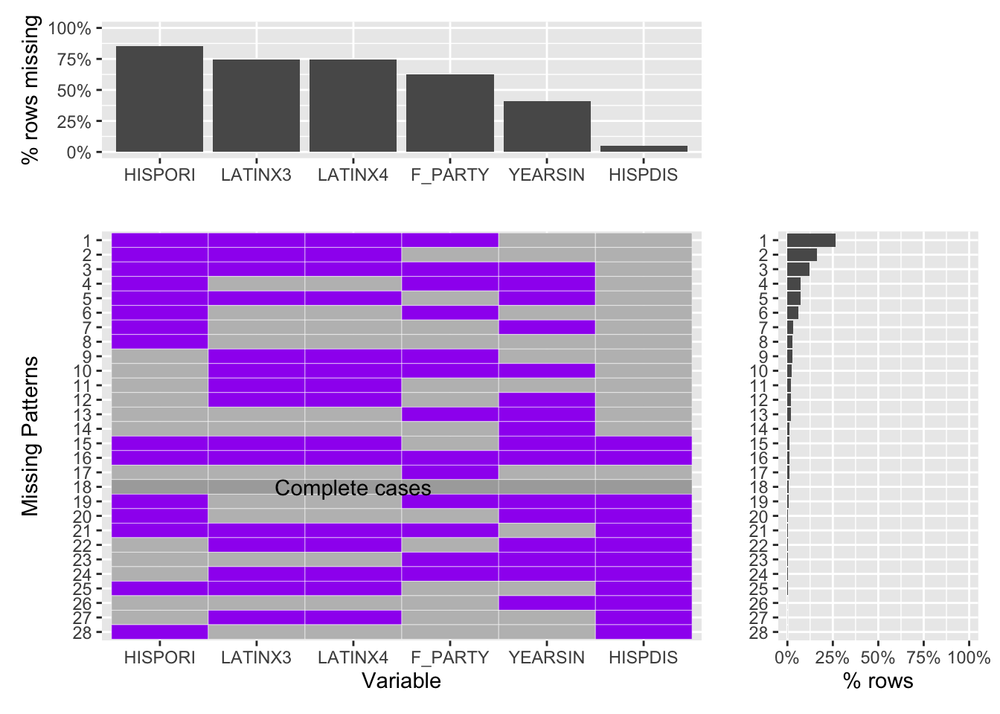

Chapter 4 Missing values
We decided that quite a few of the variables included on our original database are not of interest to our research questions. Therefore. we created a new dataset that includes only 67 of the original 110 columns in our data file. These columns were selected because they include information about the respondent’s personal identity as well as political leanings and views on the term ‘Latinx’
When we run our missing patterns function on our new dataset we find that the vast majority of our variables don’t include any missing values. However, we have so many variables that our graph is very difficult to interpret.

To solve this, we created a new chart by only selecting the variables that have missing values from our new database. By doing so, we can see that only 6 variables of interest contain missing data. The new graph of missing patterns is much clearer and tells us that, with the exception of the ‘HISPDIS’ variable, missing values are very common for most of these variables.
## [1] "HISPORIG2_W58" "LATINX3_W58" "LATINX4_W58" "HISPDISCR_d_W58" "YEARSINUS_W58"
## [6] "F_PARTYLN_FINAL"
By taking a look at the survey set up we realized that most of those missing values are there due to the nature of the survey itself.
HISPORI represents a survey question that asks participants to rank which heritage they identify with the most. However, the question is only presented if the respondent listed that they identified with more than one heritage in a previous question. Therefore, the fact that around 85% of rows are missing a value for this question means that most of the respondents identify with only 1 heritage and therefore were not presented with this question.
LATINX3 and LATINX4 ask whether the respondent has ever used the word Latinx to describe themselves and whether they feel it should be used to describe the Latino/Hispanic population in general. They are only presented to a respondent if they previously answered that they have heard that word before and know its meaning. Therefore, since around 75% of rows have missing values for this variable, we can deduct that only about 25% of respondents knew the meaning of the word.
YEARSIN asks how many years the respondent has lived in the US if the respondent was born outside of the US. Therefore we can tell that less than 50% of respondents where born outside of the US and were presented with this question.
HISPDIS asks if the respondent has been criticized for speaking Spanish publicly, we can assume that the missing values present here represent respondents who do not speak Spanish and therefore could not answer this question.
The F_PARTY variable is more complicated as it was created by the survey conductors to mark the political leaning of the respondent and is not based on a question itself. We can assume that the missing values represent reponents for which a political leaning could not be determined. However, we might look into other questions that best describe a person’s political preference if such information is needed on our analysis.